java实习：机票销售系统
[实习名称] 网络程序设计实习
[实习地点] 理学院机房
[实习时间] 第18周
[系统环境] Win10、JDK、Eclipse、记事本
[所用学时] 20学时
[实习目的]
网络程序设计实习是信息与计算科学专业学生学习完《网络程序设计》课程后，进行的一次全面的综合训练，网络程序设计实习的目的是加深对理论教学内容的理解和掌握，进一步熟悉Java开发环境，熟悉用Java完成一个应用程序的设计过程，掌握有关编辑、调试和整合程序的方法和技巧。通过此设计，了解Java语言的特点；熟悉Java程序的编写；体会Java语言在问题求解中的特点。使学生较系统地掌握程序设计及其在网络开发中的广泛应用、基本方法及技巧，为学生综合运用所学知识，利用软件工程为基础进行软件开发、并在实践应用方面打下一定基础。
一、设计题目
机票销售系统
二、设计要求
机票销售系统主要包括查询、订票、退票、管理用户、管理航班、管理城市、订票记录、重置系统等功能，各个功能的具体描述如下：
1）查询
可以查询某个航线的情况（如：输入航班号，查询起降时间、起飞抵达城市、航班票价、票价折扣、确定航班是否满仓）
2）订票
订票情况可以存在一个数据文件中，结构自己设定，可以定票，如果该航班已经无票，可以提供相关可选择航班
3）退票
可退票，退票后修改航班数据文件
4）管理用户
修改系统管理用户，该项功能包括删除账户、注销账户、解除注销
5）管理航班
录入航班：可以录入航班情况（数据存储在一个数据文件中，数据结构和具体数据自定）
删除航班
6）管理城市
添加和删除城市，信息记录在数据库文件city.txt当中
7)订票记录
显示订票记录
8)重置系统
将航班信息和录入的城市等信息清空，但不清空账户信息
三、设计分析（包括需求分析）
1、设计分析
随着我国市场经济的快速发展和信息化水平的不断提高，如何利用先进的管理手段，提高机票销售系统的水平，是当今社会所面临的一个课题。提高企业的管理水平，必须全方位地提高企业的管理意识。只有高标准、高质量的管理才能满足航空公司的发展需求。面对信息时代的挑战，利用高科技手段来提高航空公司售票管理系统无疑是一条行之有效的途径。在某种意义上，信息与科技在企业管理与现代化建设中显现出越来越重要的地位。航空公司售票管理系统方面的信息化与科学化，已成为现代化生活水平步入高台阶的重要标志。
利用计算机实现航空信息管理势在必行。对于航空公司来说，利用计算机支持管理部门高效率完成航空信息管理的日常事务，是适应现代航空公司制度要求、推动航空公司由劳动型管理走向科学化、规范化的必要条件；而航空信息管理是一项琐碎、复杂而又必须十分细致准确的工作，航线信息的管理,客户信息的管理,票务信息的管理,绝对不允许出错，如果实行手工操作,需手工填制大量的表格,这就会耗费工作人员大量的时间和精力，而且安全度也不理想,利用计算机进行航空公司信息工作的管理，不仅能够保证各项信息准确无误、快速输出，同时计算机具有手工管理所无法比拟的优点，例如：检索迅速、查找方便、可靠性高、存储量大、保密性好、寿命长、成本低等。这些优点能够极大地提高航空信息管理的效率,也是企业的科学化、正规化管理,与世界接轨的重要条件。
（1）经济可行性分析
本系统开发简单但要耗去一定的时间，所用的开发工具和软件都差不多是免费的。而且，由于系统能够在未来较长的一段时期内稳定地发挥作用，这对于航空公司自动化管理，节省公司的人力、物力资源等都有很大的帮助。由此可见，开发此系统在经济上是完全可行的。
（2）技术可行性分析
从目前IT业界比较流行的数据库开发、管理软件来看，对于航空管理这一类对数据要求比较严格的企业，Eclipse和记事本的结合无疑是在实际应用中较为成功的一种解决方案，并且省去了连接ACCESS数据库的种种问题。为用户提供了软件开发一直坚持的非常友好、操作简单的用户界面、完善强大的数据库操作功能和简洁明了的数据库接口。所以技术实行起来相对会容易。
2、需求分析
（1）系统需求
机票销售系统是可基于任何操作系统上，通过对目前大量出现在网络上的航空订票系统的分析和总结，然后根据航空运作特点，研究一套适合于广大乘客需要、企业认可的航空订票系统。要求系统有简单易懂的视图操作界面，大力提高系统的交互性和可操作性，尽可能减少使用人员的不便，让他们更简单、更快捷、更方便的进行操作。另外，要求系统具有较强的稳定性、可维护性、可移植性、扩充性。同时，实现控制各种用户系统权限，从而保证系统安全性。通过对已有的航空订票系统的研究，结合这些系统存在的优缺点而设计本系统。
（2）功能需求
1.机票销售系统，因为涉及到查询，所以考虑利用图结构进行存储。每一个城市作为图中的一个节点，利用邻接矩阵结构进行表示图结构，两节点之间用定义的航班信息结构体进行表示。如果为NULL 则表示没有两城市之间没有航线。然后输入两城市名称后，可以利用改写后的迪克斯特拉或者弗洛伊德算法进行查询。
2.然后作为订票系统，则应该可以预定三十日以内的飞机票。所以我们建立三个文件夹：flight_record、month_flight_information、booking_record
- flight_record 用来存储城市间的航班信息；
- month_flight_information 用来存储三十日内每天的航班信息（每日打开软件会根据flight_record文件夹中的信息进行自动更新）；
- booking_record用来存放订票记录
3.为方便管理使用，该系统一个登陆界面根据登陆人群不同分为两个使用界面，分别是用户界面和管理界面。用户在注册的时候，系统会先进行身份证号是否合法验证和查重，如果已经存在则让其联系管理员。
四、数据库文件和关系表的结构设计
1、用户表
用户表用于存储用户的户名、证件号、密码、状态信息，当用户注册成功后这些信息会自动记录在数据库中，以便用户查询。
表1 用户表
1 | 字段名 数值类型 说明 |
2、航班表
航班表用于存储航班号、价格、座位数、折扣、起飞时间、到达时间、起飞城市、抵达城市信息
表2 航班表
1 | 字段名 数值类型 说明 |
3、客户订票记录表
客户订票记录表用于存储姓名、证件号、航班、出发日期、订单编号、状态
表3 客户订票记录表
1 | 字段名 数值类型 说明 |
4、城市表
表4 城市表
1 | 字段名 数值类型 说明 |
五、数据库实现
1、用户信息数据库
图5-1 用户信息数据库
部分代码：
1 | if((checkID(ak1)||adName.equals("admin"))&&!ak1.equals("")&&!ak2.equals("")){ |
2、航班信息数据库
图5-2 航班信息数据库
部分代码：
1 | String strzhekou = ""; |
3、城市信息数据库（部分截图）
部分代码：
1 | public static boolean addCitys(String citynames) { |
六、系统总体设计
本系统包含两个子系统，其中用户所使用的是用户系统，而管理员所使用的是管理系统，管理员具有添加数据和删除数据的权限。每个子系统包括了若干子功能模块，每个子功能模块完成相应的处理操作功能。其中管理员的权限是最大的。基本设计流程如图6-1所示：
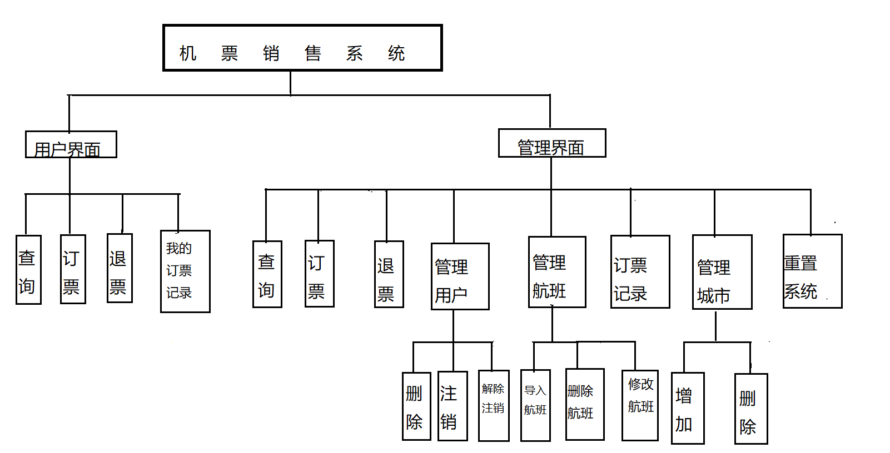
图6-1
由图可知，当系统启动后，用户需要通过验证进入自己相应的系统。系统根据用户名和密码判断用户所要进入的系统，当是管理员用户登录时会进入管理员界面功能模块，否则进入用户界面功能模块。成功登录后，用户可以完成权限限制内的操作，即当前可以操作的功能模块。用户操作时，系统自动判断用户所想要调用的功能子模块，并提交给用户，在用户完成操作后可以退出系统。
1、用户界面
用户界面提供机票销售最基本的功能，即查询、订票、退票和我的订票记录功
能。
2、管理界面
提供较为完善的管理功能，同时也包括用户界面的功能，在用户界面具有的
功能前提下加入了以下功能：
1）管理用户：修改和删除用户表中的数据，包括删除、注销和解除注销用户
2）管理航班：对航班信息进行修改，包括导入航班、修改和删除航班
3）订票记录：查询所有用户的订票记录
4）管理城市：增加和删除城市表里的城市
5）重置系统：对航班信息进行重置，即清空数据
七、系统详细设计与实现
1、登录注册模块
(1) 登录功能
用户进入系统登录界面，输入身份证号、密码，点击登录按钮实现登录系统的功能。用户输入身份证号，密码，然后后台接收数据后，进行验证。登录成功后，进入其相应的页面
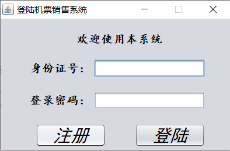
图1-1 用户登录界面
(2) 注册功能
用户进入系统注册界面，输入姓名、身份证号、登录密码，点击注册按钮实现注册用户的功能。后台判断身份证号、密码、姓名输入是否正确，正确即注册成功，返回姓名，身份证号和登录密码，如图1-3所示，否则即注册失败。
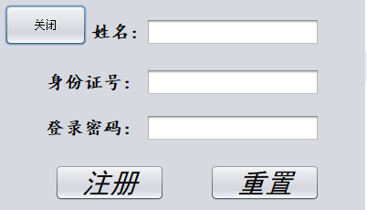
图1-2 用户注册界面
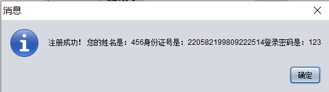
图1-3 注册成功界面
2、用户界面模块
(1)查询功能
查询航班功能，右侧提示相应的航班信息，如果没有相应航班，则提示无直达航班，图2-1
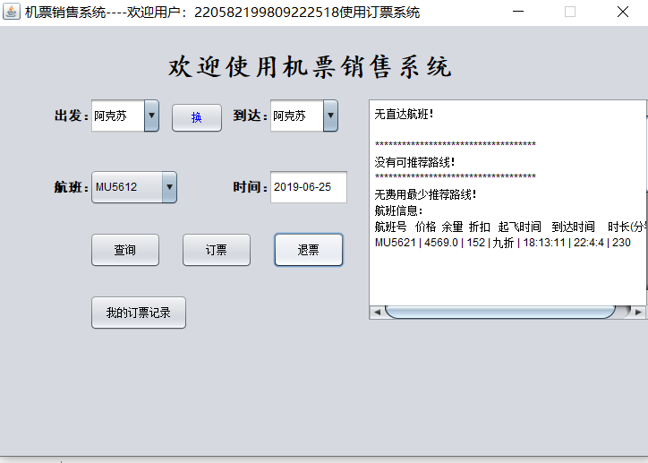
图2-1 查询界面
(2)订票功能
选择相应的航班，点击订票，即可订票。图2-2
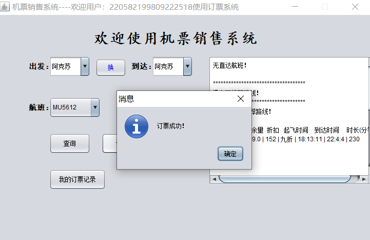
图2-2 订票成功界面
(3) 退票功能
订票成功后可以退票，点击退票后，提示：退票成功，感谢您的使用！图2-3
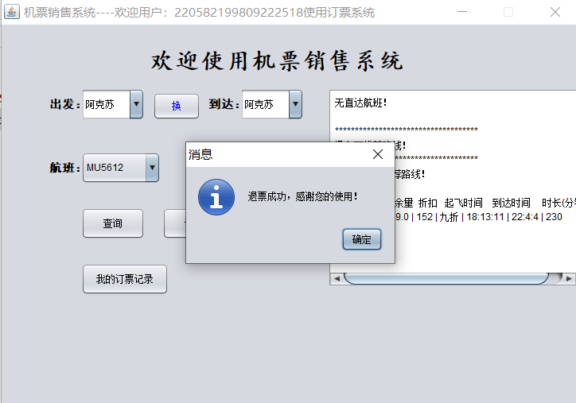
图2-3 退票成功界面
3、管理界面模块
用户进入系统登录界面，输入身份证号、密码，如果身份证号注册时用户名为admin时，进入的系统页面即为管理员界面
管理界面在用户界面的基础上增加了5个模块，如图3-1
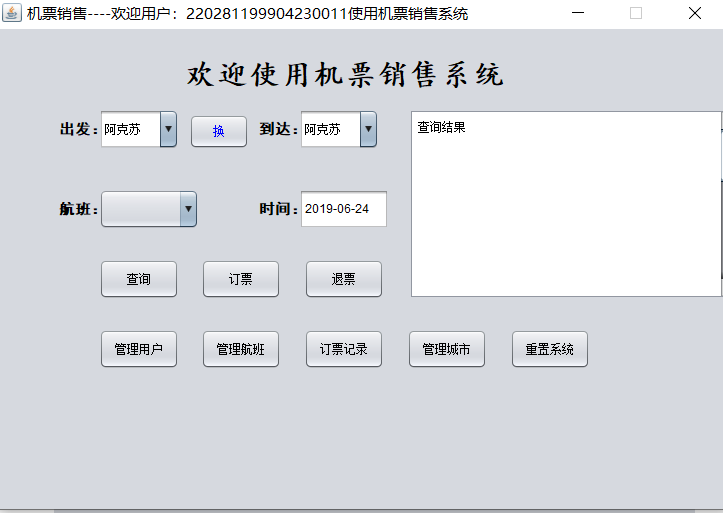
图3-1 管理界面
（1）管理用户
包括删除账户、注销账户、解除注销，图3-2
图3-2 管理账户
（2）管理航班
包括导入航班、修改航班、删除航班，图3-3，图3-4
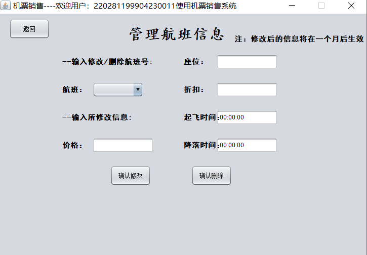
图3-3 管理航班
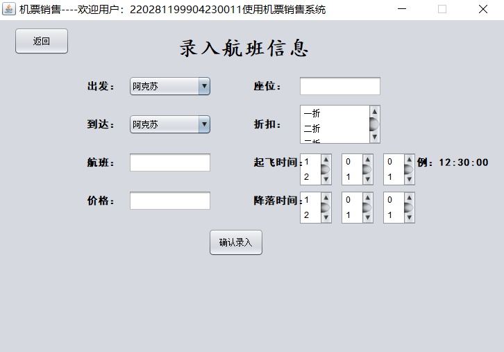
图3-4 录入航班信息
（3）订票记录
查询所有用户的订票记录，图3-5
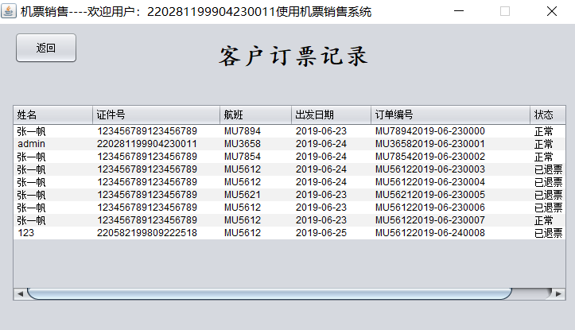
图3-5 客户订票记录
（4）管理城市
增加和删除城市。图3-6
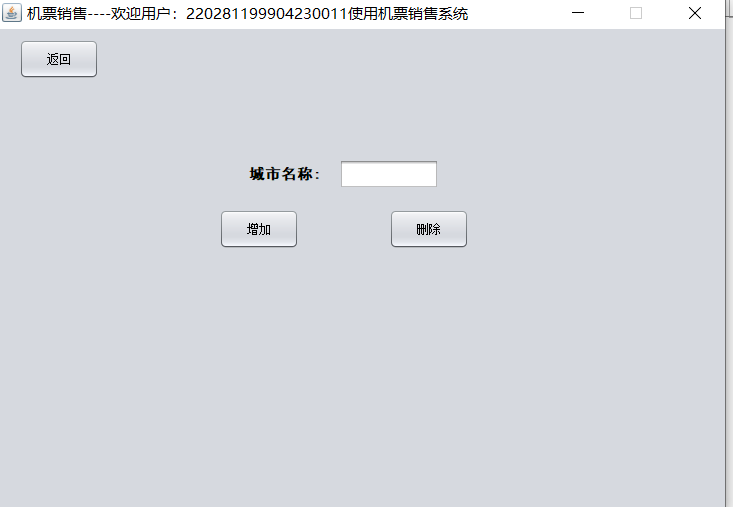
图3-6 添加和删除城市
（5）重置系统
对航班信息进行重置，清空数据
八、结论
机票销售系统，顾名思义，就是一个卖机票的系统。当我们选完实习题目，我们的压力挺大。要做一个完整的系统，以现阶段所学的全部java知识，我认为我们很难做出来一个完整的系统，由于课时有限，很多的知识都没有学到。当我们选了这个系统，就意味着我们要做出来这个系统，所以，我们不得不求助于巨大的网络资源。在网上查询各种相关机票系统的报告，里面都是一些部分代码，并没有完整的系统代码。经过我们的多番努力，终于找到了一个完整系统代码，通过我们的删减和改造，出现了我们实习报告中的系统。
经过这次实习，我从中学到了很多课本没有的东西，制作一个系统的工作量很大，里面的代码很多，自己深有体会。在写代码的过程中，会遇到各种各样的报错，调错需要有一定的耐心，不然这个错误根本调试不出来。
总之，这段时间，我看到了自己本身存在着许多问题，也会遇到这样那样的问题，之前老师教过的知识，在实际操作中却没有想起来，深刻体现了自己在学习和复习中的懒惰。讲完的知识，当时听明白了，但是课后不去复习，等到自己上手实践时仍然不会。每个知识都需要自己的巩固和练习，不然学过就像没学一样。当前的时代日趋复杂，不掌握一定的知识储备和实战经验是难以在实际工作中应付自如的。
学无止境，虽然现阶段的java知识虽不足以支撑我们完成一个系统项目，但是我们可以通过课外学习，加深自己的知识储备，我将坚持不懈地努力学习软件技术知识，并用于指导实践。对现软件行业来说，技术变化较快，在这方面我要加强自我学习。光说不做，不行。在以后的学习知识，通过多看、多学、多练来不断的提高自己的技能。这样才能不断的丰富自己，让自己不提前被这个竞争激烈的社会所淘汰。不断锻炼自己的胆识和毅力，提高自己解决实际问题的能力及沟通能力，积极、热情、细致地的对待每一件事。我相信，在我的知识不断储备以及完善之下，自己将来一定会做出自己喜欢和有用户需求的系统。
总结这段时间的实习生活，使我受益匪浅，受益一生，这将为我选择软件事业而自豪，选择软件事业而骄傲，更加坚定了我成为软件人的决心和信心，我有能力和毅力来走这条路。
参考原作系统网址：
https://blog.csdn.net/vcx08/article/details/76336111
对原作表示衷心的感谢，谢谢分享！
分享修改后的机票销售系统